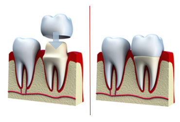
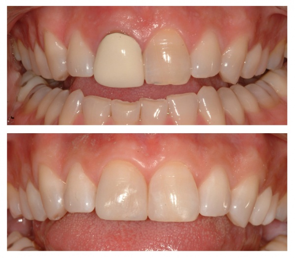

A crown is a form of restoration. It is usually a method of restoration when the tooth has been damaged to the point that a conventional filling of inlay cannot be used. If you're having a tooth-colored crown made, it could be a porcelain-and-metal crown, or with new technology available today it could be an all-porcelain crown. To have enough strength to withstand biting forces, porcelain crown used to always be built upon a metal core. If you've ever noticed a dark blue line at the edge of a crown, now you know what caused it: the dark metal inside the porcelain. New breakthroughs in adhesives and stronger porcelain materials now make it possible to make crowns entirely out of porcelain, which can then be bonded to the teeth. All-porcelain crowns maintain a translucency that makes them hard to tell from natural teeth. Without metal, the problem of a dark line at the edge of the gums is eliminated. This allows us to place the edge of the crown above the gum line and that's healthier for your tooth and gums. When you want to improve your smile, all-porcelain crowns are a beautiful and natural-looking choice.

